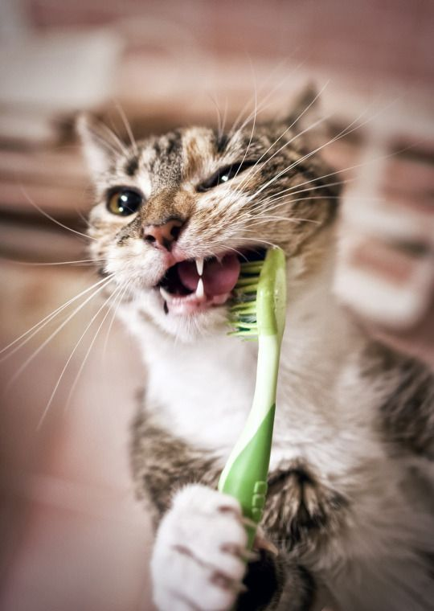
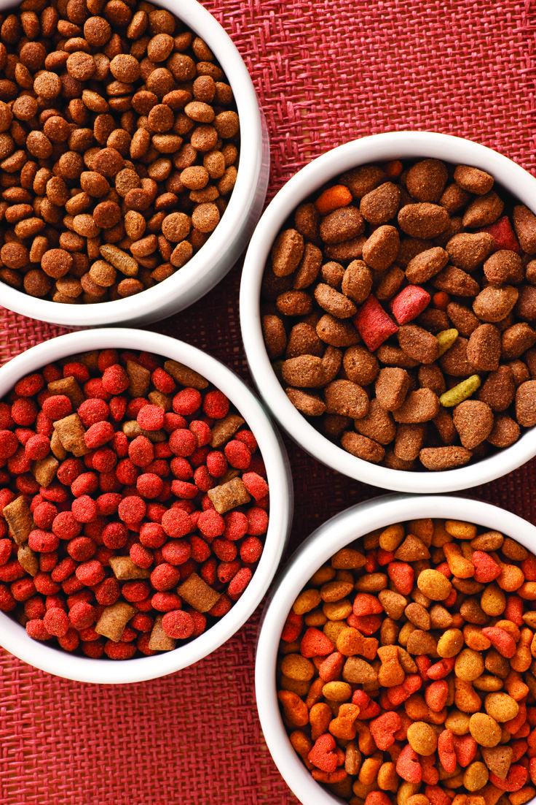

Information For Pet Owners!
Owning a pet, whether it's your first time or not, embarks you on an enriching journey filled with love, companionship, and responsibility. Taking care of your furry, feathered, or scaly friend requires attention to various aspects of their well-being, including hygiene, diet, health, and understanding the differences between traditional and exotic pets.
Hygiene

Hygiene plays a pivotal role in ensuring the well-being of your pet. Beyond just the occasional bath, grooming sessions should be a regular part of your routine. For furry friends, brushing their coats not only keeps them looking their best but also prevents matting and tangling, which can lead to discomfort and skin issues. Trimming your pet's nails is equally important, as overgrown nails can cause pain and difficulty walking. For birds and reptiles, maintaining clean cages or terrariums is imperative. Regular cleaning not only eliminates odors but also reduces the risk of bacterial growth and infections, ensuring a safe and hygienic environment for your pet to thrive.
Diet

Diet plays a pivotal role in your pet's overall health and vitality. Just like humans, pets require a balanced diet that meets their nutritional needs. Depending on the species, dietary requirements can vary significantly. Dogs and cats, for example, are carnivores and require a diet rich in animal protein. Conversely, herbivorous pets like rabbits and guinea pigs thrive on a diet consisting mainly of fresh hay and vegetables. It's crucial to research and understand your pet's dietary needs to provide them with the appropriate nutrition. Consulting with a veterinarian or pet nutritionist can offer invaluable guidance in developing a diet plan tailored to your pet's specific requirements, taking into account factors such as age, weight, and any underlying health conditions.
Check-Ups

Regular visits to the veterinarian are essential for monitoring your pet's health and detecting any potential issues early on. Vaccinations, parasite prevention, and dental care are vital aspects of their overall well-being. Building a trusting relationship with a reliable veterinarian ensures your pet receives proper medical attention when necessary.
Exotic Pets
Understanding the unique needs of your pet species is paramount, exotic pets such as reptiles, amphibians, and small mammals have specialized dietary, environmental, and behavioral requirements that differ significantly from traditional pets like dogs and cats. For example, reptiles require specific temperature and humidity levels in their habitats to thrive, while birds need ample space to fly and exercise. Researching and educating yourself on the intricacies of your pet's species-specific needs empower you to provide optimal care and create a nurturing environment that promotes their health and well-being.
Their Well-Being

Keeping your pet mentally and physically stimulated is essential for their happiness. Providing enrichment activities like interactive toys, puzzles, and regular exercise prevents boredom and behavioral issues. Spending quality time bonding with your pet strengthens your relationship and enhances their overall well-being.
It's not easy, but you CAN do it!
Being a responsible pet ownership involves a commitment to providing comprehensive care for your beloved companion. By prioritizing hygiene, nutrition, veterinary care, and understanding your pet's unique needs, you can create a loving and enriching environment where your furry, feathered, or scaly companion can flourish. Remember, the bond you share with your pet is a lifelong journey filled with joy, companionship, and unconditional love.